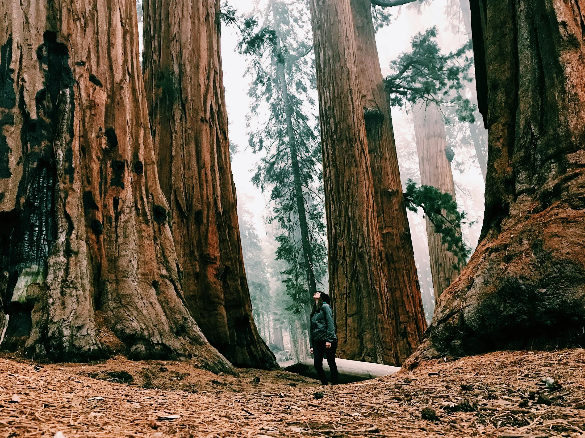

Strategie & organisatie
Strategy is how you turn what you have into what you need to get what you want - Marshall Ganz
Ik help missiegedreven organisaties impact te maken met een sterke strategie
Mijn aanpak
01 / Aanpak
Samen kiezen
wat je gaat doen.
Als organisatie hard gegroeid, piept en knarst het en ben je bang dat jullie de gezamenlijke koers kwijt raken? Of heb je juist minder middelen en moet je moeilijke keuzes te maken?
Ik help je graag op weg. Van de basis op orde krijgen, een nieuwe visie ontwikkelen met je team tot een hernieuwd strategisch kader in de praktijk brengen.
We werken aan een helder kader dat team én bestuur kunnen dragen. Ik help het te vertalen naar concrete acties en een verhaal voor bijvoorbeeld financiers. En waar nodig bouw of draai ik interim mee.
Altijd bevlogen en recht voor z’n raap. Ik doe het zo grondig als het moet, maar zo licht als het kan.

02 / Over mij
Van een goed idee
naar echte impact.
Van een woonprotest tot een internationaal muziekfestival organiseren. Van een professionele muziekopnamestudio en piepklein radiostationnetje tot landelijke publiekscampagnes en strategietrajecten runnen.
Van communicatiestrategie tot bewegingsbouw en van agile tot sociocratisch. Van een goed idee naar echte impact.
Ik help graag nieuwe initiatieven, groepen en individuen met een goed idee maar te weinig strategie, netwerk, ruimte, financiering, bereik of organisatievermogen. Ik help hen al meer dan tien jaar de wereld wat mooier, digitaler, schoner, beter, vrolijker en vooral rechtvaardiger te maken.

03 / Contact